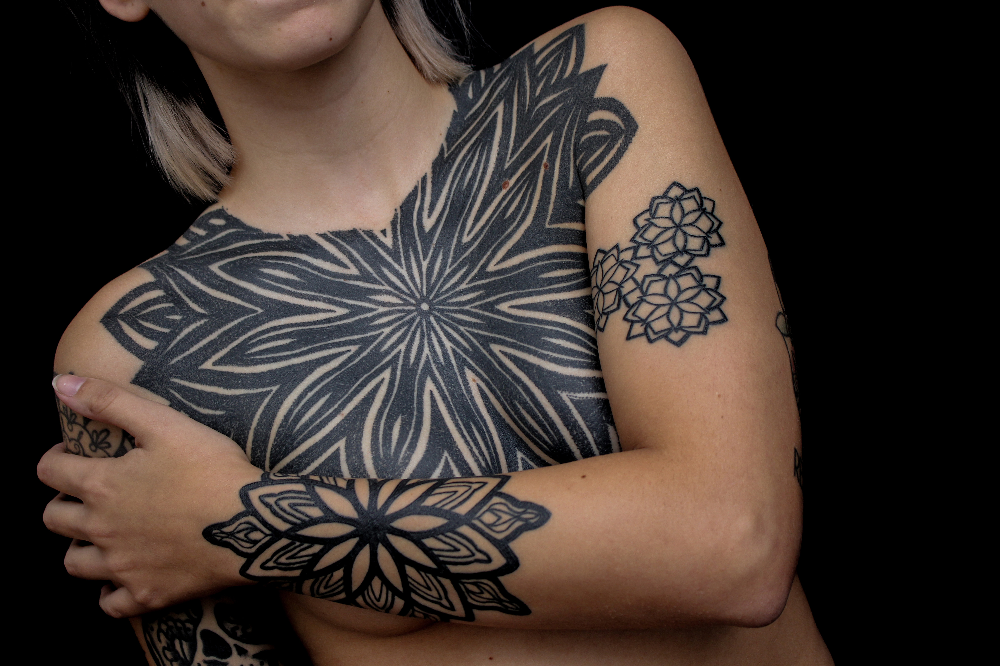
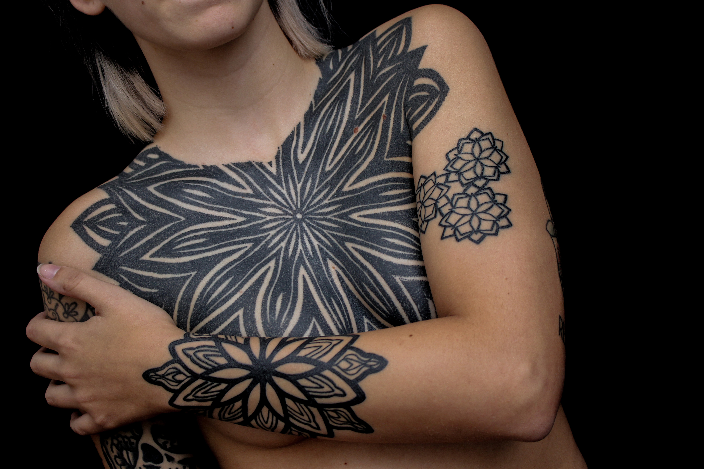

Nacido en la ciudad de Rosario se inicio en el tatuaje en el año XXXX bajo la tutela de xxxx, su primer estilo como tatuador fue el NEW SCHOOL, pero no tardo en descubrir el estilo que mas le apasiono, el HEAVY DUCK WORK. este estilo se basa en principios de geometria, simetria y DotWork (puntillismo), haciendo mucho mas enfasis en este ultimo. El estilo que realiza se ve influenciado por las primeras epocas de la pigmentacion de la piel, proveniente de culturas como la neo zelandesa y australiana entre otras. hoy en dia se encuentra trabajando en projectos propios de gran escala y planificando viajes para realizar su arte en otras partes del pais.
Trabajos

 


Aclaraciones Generales
El tatuaje es una proceso que va más allá de solo meter tinta debajo de la piel, requiere que el cliente y el artista trabajen juntos para crear algo único que se adapte al individuo, el cuerpo en una parte esencial del diseño, dicta las formas que deben seguirse o romperse.
En este último tiempo tengo interés sólo en trabajar en proyectos a gran escala que toman varias sesiones para completar. Me interesa cómo funciona un tatuaje con el cuerpo y me gusta jugar con sus distorsiones y movimientos naturales del mismo
Sobre el Diseño
Tiendo a ver el cuerpo como un solo lienzo, y no importa cuántos tatuajes tengas, solo tienes un cuerpo, por lo tanto, un único tatuaje al final de todo. Así que trato de concentrarme lo más posible en las relaciones entre tatuador y clientes individualmente para generar la confianza necesaria a lo largo del tiempo y trabajar para lograr un objetivo mayor. Cuanto más grande sea la propuesta del proyecto, o cuanto más probable sea que esté abierto la persona para hacerlo evolucionar con el tiempo, más posibilidades tendre de trabajar con vos para poder llevarlo acabo juntos. Si eres de las personas que son coleccionistas que prefiere adquirir obras de una variedad de artistas y estilos diferentes, hágalo, creo que también es un gran enfoque que puede producir resultados maravillosos. Sin embargo, como artista, uno de mis objetivos dentro de esta vida limitada es trabajar en tantos lienzos individuales como sea posible.Preferiría tener más tatuajes en menos personas en lugar de muchos tatuajes dispersos en una gran cantidad de personas. Dicho esto, si lo que está buscando es una sola relación tatuador / cliente, me encantaría comenzar a trabajar. Creo que es aconsejable comenzar con la espalda o el pecho y luego trabajar con las imágenes secundarias, es decir, con los brazos, piernas etc. Sin embargo, no es completamente necesario, ya que los clientes a menudo comienzan con los brazos y luego se mueven hacia el pecho o la espalda. Entonces, mientras tengamos en mente el objetivo mayor, el camino seguirá siendo siempre sólido.
No copio ningún tipo de trabajo de otra persona No muestro ningún diseño antes de la primera cita, ya que necesito ver la parte del cuerpo en vivo para crear algo único que se adapte al propio cuerpo de cada individuo Todos mis diseños se escalan y se rediseñan para adaptarse perfectamente al cuerpo de la persona en la que estoy trabajando. Realmente me preocupo mucho por los detalles y tomo todo el tiempo que sea necesario para hacer que todo sea perfecto.
Solo hago mis propios diseños, pero no los impongo a nadie. Cada tatuaje que hago comienza con una conversación en la cual me cuentan sus ideas o su visión sobre lo que desean realizarse, la apariencia del cuerpo puede modificarse con el diseño, realzando la belleza natural de la anatomía, crear un tatuaje grande y audaz es un esfuerzo muy laborioso que requiere horas de trabajo, dolor, dinero y consistencia. Los resultados son piezas únicas de arte del tatuaje que los clientes pueden llevar con orgullo el resto de sus vidas, solo pido que mis clientes estén abiertos y confíen en mí. Tengo en mente proyectos que me gustaría realizar como:
- Espaldas Completas
- Piernas Simetricas o asimetricas
- Brazos Simetricos
- Torsos Completos